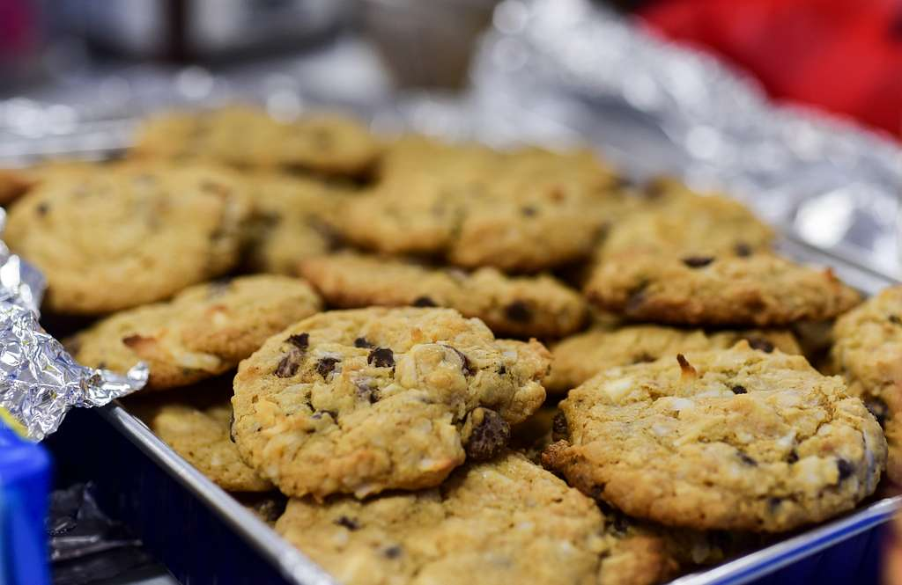

Home
Oatmeal Raisin Cookies

Description
Oatmeal raisin cookies are a personal favorite of mine and quick to make.
If you are looking for something a little different, try using cranberries and walnuts in place of the raisins.
All of the ingredients are minimally processed and easy to find in most grocery stores.
Ingredients:
- 3/4 cup butter
- 3/4 cup white sugar
- 3/4 cup light brown sugar
- 2 large eggs
- 1 teaspoon vanilla extract
- 1 1/4 cups all-purpose flour
- 1 teaspoon baking soda
- 3/4 teaspoon ground cinnamon
- 1/2 teaspoon salt
- 2 3/4 cups rolled oats
- 1 cup raisins
Steps:
- Preheat the oven to 375 degrees Fahrenheit.
- Line two cookie sheets with parchment paper or silicone liners.
- In a large bowl, beat butter, white sugar, and brown sugar until smooth and creamy.
- Beat in the eggs and vanilla extract until fluffy.
- In a medium bowl, combine flour, baking soda, cinnamon, and salt.
- Gradually beat the dry mixure (the medium bowl) into the butter mixure (the large bowl).
- Stir in the oats and raisins.
- Drops teaspoonfuls of batter 2 inches apart on the prepared cookie sheets.
- Place the cookie sheets on the center rack of the oven until golden brown--about 8 to 10 minutes.
- Remove the cookie sheets from the oven and allow them to cool for 1 to 2 minutes.
- Remove the cookies from the cookie sheets and place them onto wire racks to cool completely.
- Serve and enjoy! (Try it with a glass of cold milk or hot spiced tea!)